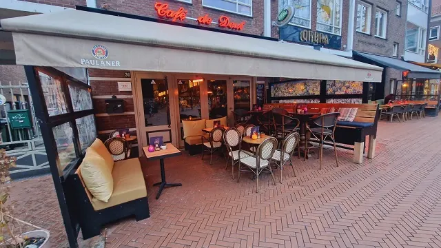
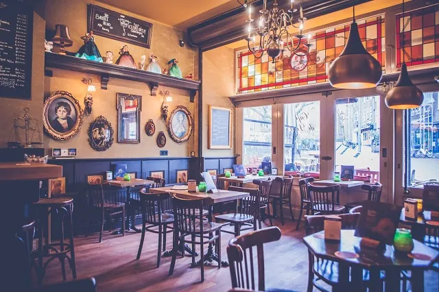
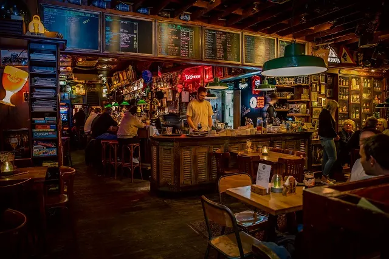
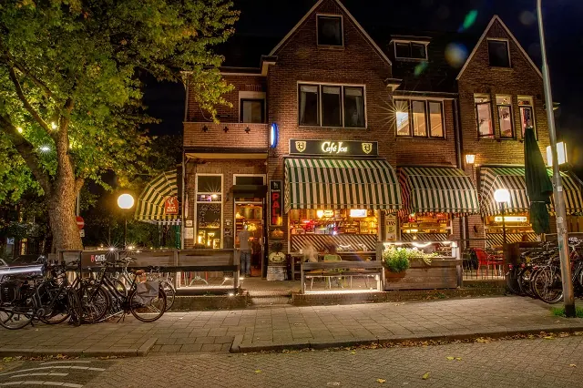
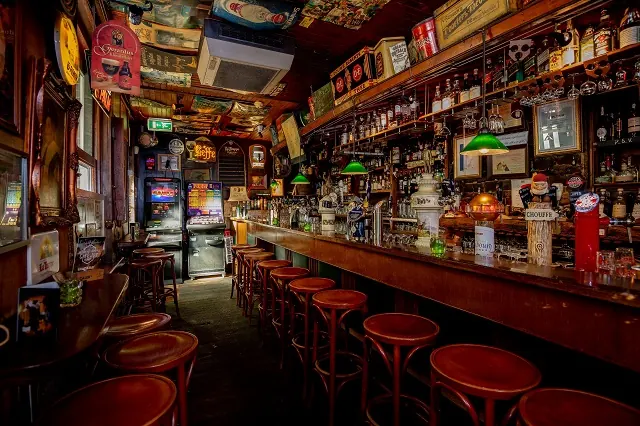
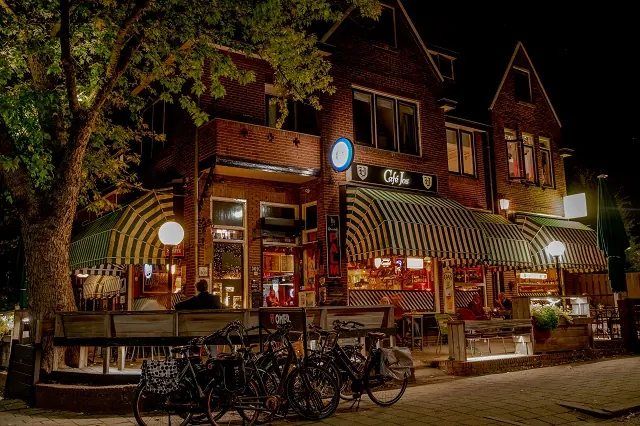
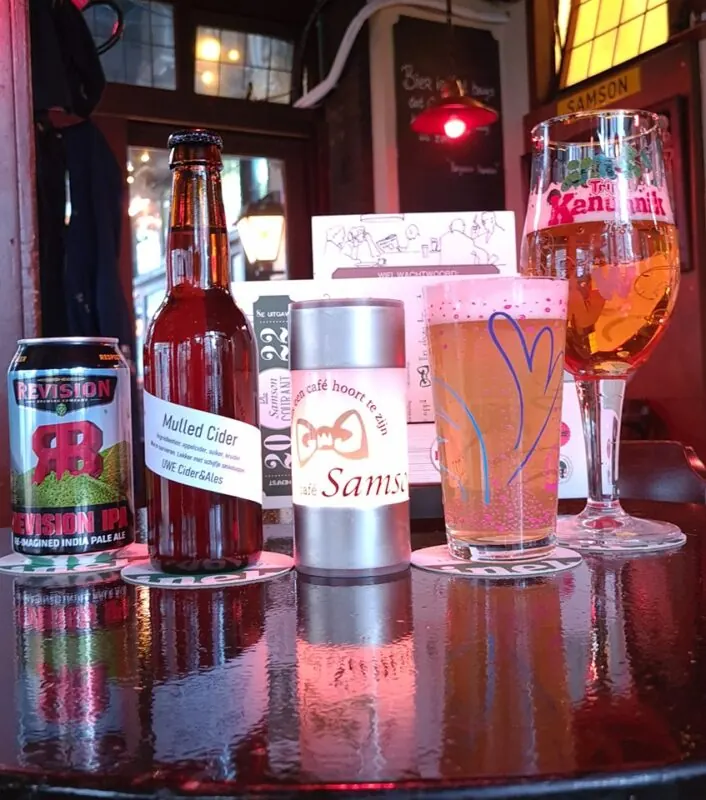
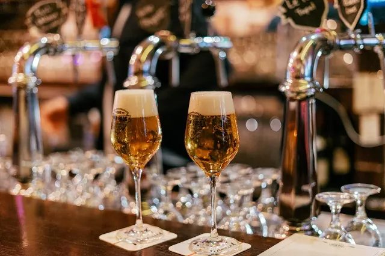
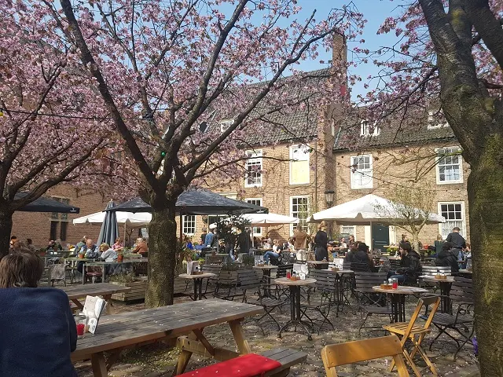
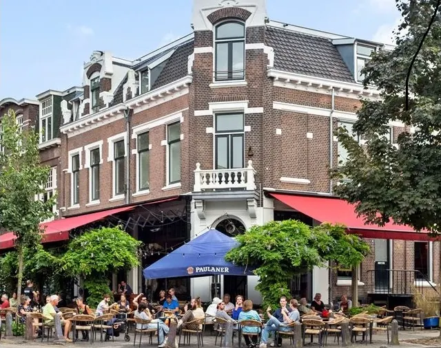

De 8 beste biercafés van Nijmegen
Gepubliceerd op 20 december 2022, bijgewerkt op 7 november 2024
Onderdeel van de gids Cafés in Nijmegen

Het oudste en meer populaire Nijmeegse bier was het Molbier. Dat werd tot in Amsterdam en Antwerpen gedronken. In Nijmegen zitten nu negen brouwerijen, en veel leuke cafés die de biertjes uit eigen stad schenken. We hebben ook caféhouders gesproken die juist voor de onbekende biertjes gaan uit Nederland, of andere uithoeken van de wereld.
In deze cafés drink je de lekkerste, en veelal lokale biertjes
1. Café de Deut
Café de Deut is een van de cafés met een groot terras op het Koningsplein. Niet alleen serveren zij hun originele bieren op dit terras, ook binnen kan je in passende sfeer genieten van deze echte speciale bieren. Café de Deut is niet alleen goed in het vinden van bijzondere brouwers, ze zijn ook organisatorisch sterk. Zo zijn zij onderdeel van het organisatieteam dat elk jaar weer de Nijmeegse Bier Feesten, het Bockbierfestival en het Winterbierfestival mogelijk maakt.
Café de Deut heeft niet alleen 20 bieren op de tap en 80 bieren in flesjes en blikken, ze zijn ook de enige kroeg met een eregilde. Een wall of fame, waar je op kan komen te staan, mits je alle speciaal bier-uitdagingen aangaat. De stempels verzamel je op je eigen tempo, want rustig aan genieten staat bij de Deut hoog in het vaandel.


2. Café Jos
In de jaren 90 heeft café Jos zich ontwikkeld tot Nederlands eerste meesterschenkerij. Al snel daarna kwamen ze in de Nederlandse Café Top 100 terecht. Na al een aantal jaren hoog in ranglijst te staan, kwamen zij in 2009 op nummer één terecht. Café Jos is dus het beste en meest opmerkelijke buurtcafé van Nederland.
Café Jos heeft ruim 200 bieren op de fles en 36 bieren op de tap. Daarnaast hebben ze een eigen vatkamer. Daar ligt een uitgebreid assortiment te rijpen. Ze snappen heel goed dat het moeilijk kiezen wordt op deze manier. Daarom stellen ze graag een proeverij voor je samen, gebaseerd op jouw persoonlijke smaak.




3. Café Samson
Café Samson heeft meer dan 100 verschillende bieren op de fles en 18 vaste tapbieren. Daarnaast hebben zij zes wisselkranen, en zijn er plannen om deze te verdubbelen. Veel van de bieren komen uit ons eigen kikkerlandje, maar ze staan ook open voor landen, waar je het niet van verwacht. Het meest gedronken biertje komt wel van eigen bodem: ‘’t Ijwit, ook bij -20’, vertelde een van de barmannen ons.
Ze hebben vier biersommeliers in dienst die het assortiment opstellen. Zij houden de rest van het team op de hoogte van alle veranderingen en anekdotes die bij elk biertje horen. Het meest bijzondere biertje van Samson is hun eigen brouwsel. Elk seizoen staat een ander deel van hun eigen team bij Gulpener het nieuwe bier te brouwen.
Wil je niet vergeten wat je gedronken hebt, of meer weten? Dan heeft Samson een eigen bierapp ontwikkeld. Zij waren daarmee de allereerste in Nederland.

4. Café van Ouds
Café van Ouds is opgericht door vier vrienden die op een treurige avond hoorde dat hun stamkroeg er destijds mee ophield. Gelukkig brachten de vele lekkere biertjes daar hun op het geweldige idee om zelf een kroeg te kopen. En dat is gelukt. Het belangrijkste was dat er genoeg keus in speciaal bier zou komen, en dan de bijzondere exemplaren. Ze hebben meer dan 200 bieren op de fles en 16 taps.
Van Ouds is minder fan van de menukaart, zoals we die als vanouds kennen. Zij willen hun gasten ook niet teleurstellen als er een biertje op is. Daarom hebben ze een QR-code systeem, zo zie je precies wat er in huis is en wat ze extra op het vat hebben. Na elke editie van het MOUT bierfestival komen alle open fusten naar hen toe, en de gasten krijgen ze de kans nog wat langer van deze biertjes te genieten, tegen een schappelijk prijsje.
Café van Ouds heeft zelf een recept ontwikkeld voor een trippel en een blond biertje. Onze zuiderburen bij brouwerij de Schelde brouwen dat voor ze. En dat ze van samenwerking houden blijkt ook uit het nieuwe succes waarin ze met delicatesse winkel Moenen samen een bieren en kazen proeverij organiseren elke 12e van februari.

5. De Hemel
Hemels genieten van passie en eigen ambacht, dat doe je in café en brouwerij de Hemel. Hoe gaaf is het om je biertje bij de brouwer in de huiskamer te mogen drinken, of op zijn sprookjesachtige terras. De Hemel staat bekend om zijn proeverijen. Met een helse proeverij voor het stappen zit de sfeer er al meteen in en zul je door de gezellige straten van Nijmegen zwieren.
Ben je een rustige drinker, of juist een bourgondische genieter? De bieren zijn er in verschillende percentages, met de mogelijkheid tot een High Beer proeverij. Hierbij geniet je van vier verschillende biertjes met bourgondische hapjes. Sowieso kan hier gegeten worden en in elke saus of marinade komt weer een ander biertje terug.

6. Piet Huisman
Piet Huisman hoort zeker in dit rijtje thuis, met meer dan 400 bieren in huis. Het grootste assortiment van Nijmegen. ‘We zoeken altijd naar unieke bieren, wie niemand anders in Nijmegen serveert en we hebben een groot aanbod in IPA, Stout en Barleywines’, vertelt Maurice Huisman en ze zijn altijd opzoek naar unieke bieren. Zo hebben ze altijd wel Westvleteren XII, unieke stouts als Bourbon Country uit Amerika op de kaart staan.
7. Café In De Blaauwe Hand
In café In De Blaauwe Hand mag je erop rekenen dat al het personeel verstand heeft van bier. Eigenaar Gert is biersommelier en hij laat iedere aanwinst binnen zijn team, van een opleiding genieten. Dit kan intern, maar ook bij de Wijnacademie of Stichting Bieronderwijs Nederland.
Het managementteam bestaande uit Max, Casper en Reyhan zorgen ervoor dat alles strak georganiseerd wordt en zij zijn verantwoordelijk voor de samenstelling van het drankassortiment. Ze zorgen voor veel afwisseling op de wisseltap en helpen je graag bij het kiezen van de lekkerste bijpassende gerechtjes van Nienke van Hunen. Zij heeft inmiddels enkele kookboeken op haar naam staan en verzorgt de artiestencatering bij Doornroosje.
8. Café Maxim
In café Maxim zit voornamelijk in de zomer het hele terras te springen om een Botterik. Een biertje dat door brouwerij de Hemel is gebrouwen, speciaal voor de wijkcafés in Bottendaal. Eigenaar Kris vertelde ons dat het biertje dan niet aan te slepen is. ‘Mensen komen speciaal hierheen voor een Botterik’, zei hij.

Naast het succes van de Botterik heeft Maxim ook een eigen biertje. Toen Kris op een dag in een kroeg in Amsterdam aan de praat raakte met een andere gast bleek hij een brouwerij te hebben. Kris zei daarop: ‘nou, da’s ook toevallig, ik een café’. Zo doende wordt het frisse blond biertje uit Amsterdam rijkelijk geschonken bij Maxim. Naast bovenstaande cafés hebben we gelukkig nog vele andere café’s in Nijmegen zitten.
Leuke weetjes
- De 7 gezelligste eetcafes in Nijmegen
- De 7 gezelligste cafés buiten het centrum van Nijmegen
- De 8 beste biercafes van nijmegen
- De 7 cafes met de meeste historie in Nijmegen
OVERZICHT CAFÉS in nijmegen
BEKIJKBrouwerijen en slijterijen in Nijmegen
Zin om te beginnen? In onze bedrijvengids vind je alle 6 brouwerijen en slijterijen in Nijmegen, met openingstijden, kenmerken en een kaart.
Bekijk alle 6 brouwerijen en slijterijen in Nijmegen
Heb je zelf een brouwerij? Laat je hier uitlichten.